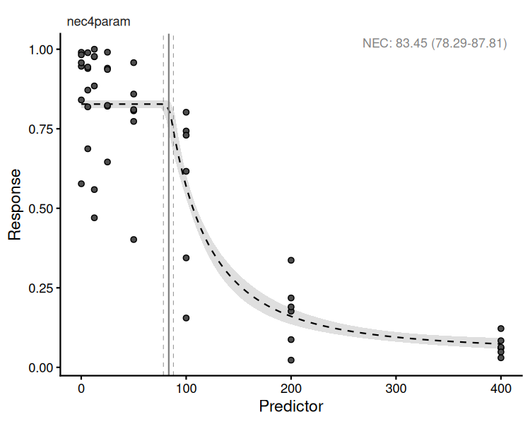
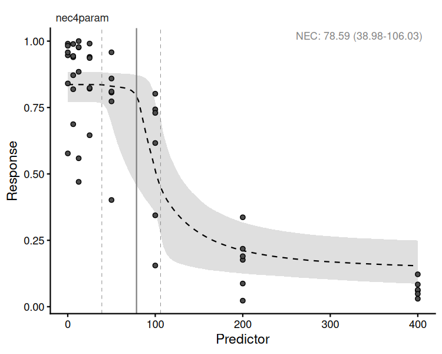
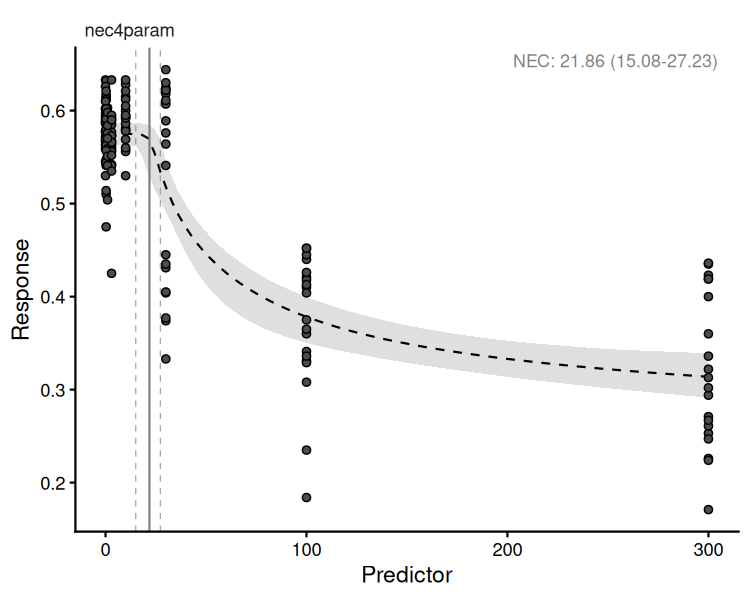
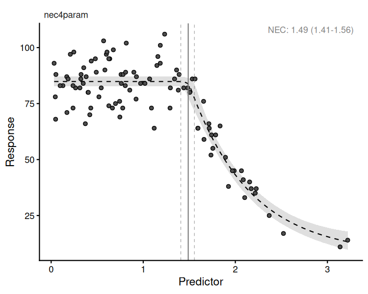
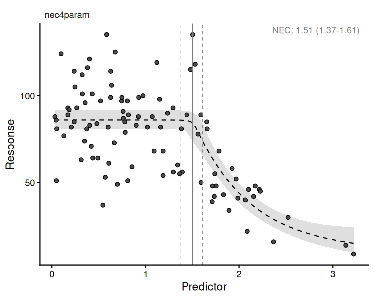
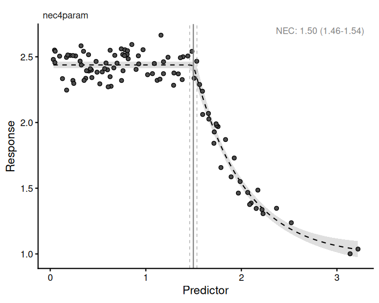
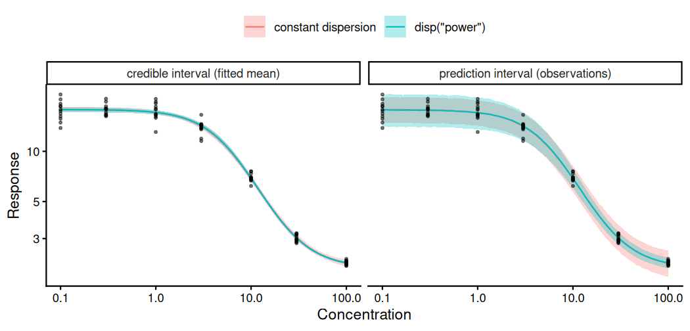
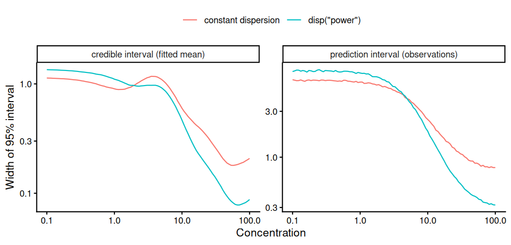

bayesnec
The bayesnec is an R package to fit concentration(dose)
— response curves to toxicity data, and derive No-Effect-Concentration
(NEC), No-Significant-Effect-Concentration (NSEC,
(Fisher and Fox 2023)), and
Effect-Concentration (of specified percentage “x”, ECx)
thresholds from non-linear models fitted using Bayesian Hamiltonian
Monte Carlo (HMC) via brms (Bürkner
2017; Bürkner 2018) and stan. The package is an
adaptation and extension of an initial package jagsNEC
(Fisher et al. 2020) which was based on
the R2jags package (Su and Yajima
2015) and jags (Plummer
2003).
Bayesian model fitting can be difficult to automate across a broad
range of usage cases, particularly with respect to specifying valid
initial values and appropriate priors. This is one reason the use of
Bayesian statistics for NEC estimation (or even ECx
estimation) is not currently widely adopted across the broader
ecotoxicological community, who rarely have access to specialist
statistical expertise. The bayesnec package provides an
accessible interface specifically for fitting NEC models and
other concentration—response models using Bayesian methods. A range of
models are specified based on the known distribution of the
“concentration” or “dose” variable (the predictor) as well as the
“response” variable. The package requires a simplified model formula,
which together with the data is used to wrangle more complex non-linear
model formula(s), as well as to generate priors and initial values
required to call a brms model. While the distribution of
the predictor and response variables can be specified directly,
bayesnec will automatically attempt to assign the correct
distribution to use based on the characteristics of the provided
data.
This project started with an implementation of the NEC model
based on that described in (Pires et al. 2002) and (Fox 2010) using R2jags (Fisher et al. 2020). The package has been
further generalised to allow a large range of response variables to be
modelled using the appropriate statistical distribution. While the
original jagsNEC implementation supported Gaussian-,
Poisson-, Binomial-, Gamma-, Negative Binomial- and Beta-distributed
response data, bayesnec additionally supports the
Beta-Binomial distribution, and can be easily extended to include any of
the available brms families. We have since also further
added a range of alternative NEC model types, as well as a
range of concentration—response models (such as 4-parameter logistic and
Weibull models) that are commonly used in frequentist-based packages
such as drc(Ritz et al.
2016). These models do not employ segmented linear regression
(i.e., use of a step function) but model the response as a
smooth function of concentration. They can be used to derive no-effect
toxicity estimates as a no-significant-effect-concentration (Fisher and Fox 2023).
Specific models can be fit directly using bnec, which is
what we discuss here. Alternatively, it is possible to fit a custom
model set, a specific model set, or all the available models. Further
information on fitting multi-models using bayesnec can be
found in the Multi
model usage vignette. For detailed information on the models
available in bayesnec see the Model
details vignette.
Important information on the current package is contained in the
bayesnec help-files and the Model
details vignette.
This package is currently under development. We are keen to receive any feedback regarding usage, and especially bug reporting that includes an easy to run self-contained reproducible example of unexpected behaviour, or example model fits that fail to converge (have poor chain mixing) or yield other errors. Such information will hopefully help us towards building a more robust package. We cannot help troubleshoot issues if an easy-to-run reproducible example is not supplied.
To install the latest release version from CRAN use
install.packages("bayesnec")The current development version can be downloaded from GitHub via
if (!requireNamespace("remotes")) {
install.packages("remotes")
}
remotes::install_github("open-aims/bayesnec", ref = "dev")Because bayesnec is based on brms and Stan, a C++ compiler is required. The
program Rtools comes
with a C++ compiler for Windows. On Mac, you should install Xcode. See
the prerequisites section on this link
for further instructions on how to get the compilers running.
To run this vignette, we will also need some additional packages
The scale on which the predictor enters the model is a decision the
user has to make, and bayesnec does not make it for them.
bnec takes the concentration exactly as it is given. It is
worth settling before any model is fitted, because it generally matters
more than the choice of equation: on one algal dataset, moving a
nec4param fit from the raw dose axis to
log(dose) reduced the maximum lack of fit in the mean from
0.2115 to 0.0676 on a response spanning about 0.7, while five different
equations fitted on the log axis all landed within 1.2
elpd_loo of one another.
Concentration—response experiments are usually laid out as a dilution series, in which each concentration is a fixed multiple of the one below it. On a linear axis such a design crushes the low concentrations together and spreads the high ones out, so the equation spends its flexibility at the top of the range, where the response is often already flat, and has few distinct points where the response is actually changing.
The way to tell is to look at the spacing of the design, not at the response. If the concentrations are near evenly spaced after a log transformation, the series was laid out on a log scale and is usually best modelled there:
# the concentrations used in the Beta example below
conc <- c(0.01, 0.3, 1, 3, 10, 30, 100, 300)
# coefficient of variation of the gaps between adjacent concentrations:
# small means evenly spaced on that scale
spacing_cv <- function(x) sd(diff(sort(x))) / mean(diff(sort(x)))
round(c(linear = spacing_cv(conc), log = spacing_cv(log(conc))), 2)
#> linear log
#> 1.72 0.58Any simple transformation may be written directly inside
crf, as crf(log(x), model = "nec4param"). Two
consequences follow. Zero concentrations cannot be logged, so a control
recorded as 0 needs an offset first — bayesnec
uses min(x[x > 0]) / 10 when it has to make that
substitution itself on the raw axis. And the toxicity estimates are then
returned on the transformed scale, so nec, ecx
and nsec need back-transforming, with xform
doing the same job for plots:
One caution on the inline form as the package currently stands. A
transformation whose argument is a bare variable, such as
log(x) or sqrt(x), is handled correctly
throughout. Where the argument contains arithmetic of its own, such as
log(x + 1), nec is still reported on the
transformed scale but ecx and nsec are not:
they are back-transformed as though the offset were absent, and so are
slightly in error. Pre-computing the transformation into its own column
and passing it as a bare variable avoids this entirely:
prop_data$log_x <- log(prop_data$raw_x + 1)
bnec(resp ~ crf(log_x, model = "nec4param"), data = prop_data)The simulated examples further below stay on the linear scale, and
deliberately so. They are generated by data-raw/nec_data.R
as x <- abs(rnorm(100, 1)) — 100 random draws rather
than a designed series — and the true curve is defined as a function of
linear x, with nec = 1.5 in linear units.
Logging them would distort the generating scale rather than reveal it.
The difference between those examples and the three real datasets is the
design, not the package.
nec4param model using
bnec
Here we include some examples showing how to use the package to fit
an NEC model to binomial, proportional, count and continuous
response data. The examples are those used at: https://github.com/gerard-ricardo/NECs/blob/master/NECs,
but here we are showing how to fit models to these data using the
bayesnec package. Note however, the default behaviour in
bayesnec is to use the "identity" link because
the native link functions for each family (e.g., "logit"
for Binomial, "log" for Poisson) introduce non-linear
transformation on formulas which are already non-linear. So please be
aware that estimates of NEC or ECx might not be as
expected when using link functions other than identity (see the Model
details vignette for more information and the models available in
bayesnec).
The response variable is considered to follow a binomial distribution
when it is a count out of a total (such as the percentage survival of
individuals, for example). First, we read in the binomial example from
pastebin, prepare the data for
analysis, and then inspect the dataset as well as the “concentration”,
in this case raw_x.
binom_data <- "https://pastebin.com/raw/zfrUha88" |>
read.table(header = TRUE, dec = ",", stringsAsFactors = FALSE) |>
dplyr::rename(raw_x = raw.x) |>
dplyr::mutate(raw_x = as.numeric(as.character(raw_x)))
str(binom_data)
#> 'data.frame': 48 obs. of 3 variables:
#> $ raw_x: num 0.1 0.1 0.1 0.1 0.1 0.1 6.25 6.25 6.25 6.25 ...
#> $ suc : int 101 106 102 112 58 158 95 91 93 113 ...
#> $ tot : int 175 112 103 114 69 165 109 92 99 138 ...
summary(binom_data$raw_x)
#> Min. 1st Qu. Median Mean 3rd Qu. Max.
#> 0.10 10.94 37.50 99.23 125.00 400.00In this case for raw_x, lowest concentration is 0.1 and
the highest is 400. The data are right skewed and on the continuous
scale. This type of distribution for the predictor data are common for
concentration—response experiments, where the concentration
data are the concentration of contaminants, or dilutions. The current
default in bayesnec is to estimate the appropriate
distribution(s) and priors based on the data, but it is possible to
supply prior or family directly as additional
arguments to the underlying brm function from
brms. We are going to model this with the predictor data on
a log scale, as this is the scaling clearly used in the experimental
design and thus will provide more stable results.
The data are binomial, with the column suc indicating
the number of successes in the binomial call, and column
tot indicating the number of trials.
The main working function in bayesnec is the function
bnec, which calls the other necessary functions and fits
the brms model. We can run bnec by supplying
formula: a special formula which comprises the relationship
between response and predictor, and the C-R model (or models) chosen to
be fitted; and data: a data.frame containing
the data for the model fitting, here, binom_data.
The basic bayesnec formula should be of the form:
suc | trials(tot) ~ crf(log(raw_x), model = "your_model")where the left-hand side of the formula is implemented exactly as in
brms, including the trials term. The
right-hand side of the formula contains the special internal function
crf (which stands for concentration-response function), and
takes the predictor (including any simple function transformations such
as log) and the desired C-R model or suite of models. As
with any formula in R, the name of the terms need to be exactly as they
are in the input data.frame.
bnec will guess the data types for use, although as
mentioned above we could manually specify family as
"binomial" (or binomial, or
binomial()). bnec will also generate
appropriate priors for the brms model call, although these
can also be specified manually (see the Priors
vignette for more details).
library(bayesnec)
exp_1 <- bnec(suc | trials(tot) ~ crf(log(raw_x), model = "nec4param"),
data = binom_data, seed = 333, open_progress = FALSE)The function shows the progress of the brms fit and
returns the usual brms output (with a few other elements
added to this list). The function plot(pull_brmsfit(exp_1))
can be used to plot the chains, so we can assess mixing and look for
other potential issues with the model fit. We can also run a pairs plot
that can help to assess issues with identifiability, and which also
looks OK. There are a range of other model diagnostics that can be
explored for brms model fits, using the function
pull_brmsfit. We encourage you to explore the rich material
already on GitHub regarding use and validation of brms models.
Initially bayesnec will attempt to use starting values
generated for that type of model formula and family. It will run the
iterations and then test if all chains are valid. If the model does not
have valid chains bayesnec will discard that model and an
error will be returned indicating the model could not be fit
successfully.
Whenever the model argument of crf is a
single model bnec will return an object of class
bayesnecfit. We can see the summary of our fitted model
parameters using:
summary(exp_1)
#> Object of class bayesnecfit containing the nec4param model
#>
#> Family: binomial
#> Links: mu = identity
#> Formula: suc | trials(tot) ~ bot + (top - bot) * exp(-exp(beta) * (log(raw_x) - nec) * step(log(raw_x) - nec))
#> bot ~ 1
#> top ~ 1
#> beta ~ 1
#> nec ~ 1
#> Data: data (Number of observations: 48)
#> Draws: 4 chains, each with iter = 10000; warmup = 8000; thin = 1;
#> total post-warmup draws = 8000
#>
#> Regression Coefficients:
#> Estimate Est.Error l-95% CI u-95% CI Rhat Bulk_ESS Tail_ESS
#> bot 0.05 0.02 0.02 0.08 1.00 3123 2828
#> top 0.83 0.01 0.81 0.84 1.00 3958 4178
#> beta 0.80 0.13 0.56 1.07 1.00 2690 3166
#> nec 4.43 0.03 4.36 4.47 1.00 3084 4024
#>
#> Draws were sampled using sampling(NUTS). For each parameter, Bulk_ESS
#> and Tail_ESS are effective sample size measures, and Rhat is the potential
#> scale reduction factor on split chains (at convergence, Rhat = 1).
#>
#>
#> Estimate Q2.5 Q97.5
#> NEC 4.43 4.36 4.47
#>
#>
#> Bayesian R2 estimates:
#> Estimate Est.Error Q2.5 Q97.5
#> R2 0.81 0.00 0.80 0.82Note the Rhat values in this example are one, indicating convergence.
The functions plot (extending base plot
method) and autoplot (extending ggplot2 plot
method) can be used to plot the fitted model. You can also make your own
plot from the data included in the returned object (class
bayesnecfit) from the call to bnec.
Notice, however, that in this case we log-transformed the
predictor raw_x in the input formula. This causes
brms to pass these transformations onto Stan’s native code,
and therefore derived toxicity estimates will be on that same scale. So
we need to transform them back to the data scale using the additional
argument xform.
autoplot(exp_1, xform = exp)
plot of chunk exmp1-binom
There are many built in methods available for brmsfit
objects and we encourage you to make use of these in full.
This model fit does not look great. You can see that the error bounds
around the fit are far too narrow for this data given the variability
among the points, suggesting over dispersion of this model (meaning that
the data are more variable than this model fit predicts). For models
whose response data are Binomial- or Poisson-distributed, an estimate of
dispersion is provided by bayesnec, and this can be
extracted using exp_1$dispersion. Values > 1 indicate
overdispersion and values < 1 indicate underdispersion. In this case
the overdispersion value is much bigger than 1, suggesting extreme
overdispersion (meaning our model does not properly capture the true
variability represented in this data). We would need to consider
alternative ways of modelling this data using a different distribution,
such as the Beta-Binomial.
exp_1$dispersion
#> Estimate Q2.5 Q97.5
#> 19.65927 13.20570 31.09474The Beta-Binomial model can be useful for overdispersed Binomial data.
exp_1b <- bnec(suc | trials(tot) ~ crf(log(raw_x), model = "nec4param"),
data = binom_data, family = beta_binomial(link = "identity"),
seed = 333, open_progress = FALSE)Fitting this data with the beta_binomial yields a much
more realistic fit in terms of the confidence bounds (check
autoplot(exp_1b, xform = exp)) and the spread in the data.
Note that a dispersion estimate is not provided here, as overdispersion
is only relevant for Poisson and Binomial data.
autoplot(exp_1b, xform = exp)
plot of chunk exmp1-bbinom
exp_1b$dispersion
#> [1] NA NA NANow that we have a better fit to these data, we can interpret the results. The estimated NEC value can be obtained directly from the fitted model object. As explained above, we need to transform NEC back to the data scale.
summary(exp(exp_1b$ne_posterior))
#> Min. 1st Qu. Median Mean 3rd Qu. Max.
#> 22.98 67.31 79.46 77.96 88.58 198.62ECx estimates can also be obtained from the NEC
model fit, using the function ecx. Note these may differ
from a typical 4-parameter non-linear model, as the NEC model
is a broken stick non-linear regression and will often fall more sharply
than a smooth 4-parameter non-linear curve. See both the Model
details and Comparing
posterior predictions vignettes for more information.
ecx(exp_1b, xform = exp)
#> Q50 Q2.5 Q97.5
#> 82.96216 36.92763 99.77477
#> attr(,"resolution")
#> [1] 1000
#> attr(,"ecx_val")
#> [1] 10
#> attr(,"toxicity_estimate")
#> [1] "ecx"A summary method has also been developed for bayesnecfit
objects that gives an overall summary of the model statistics, which
also include the estimate for NEC, as the
nec_intercept population-level effect in the model—again,
its value will depend on the scale of the predictor variable.
summary(exp_1b)
#> Object of class bayesnecfit containing the nec4param model
#>
#> Family: beta_binomial
#> Links: mu = identity
#> Formula: suc | trials(tot) ~ bot + (top - bot) * exp(-exp(beta) * (log(raw_x) - nec) * step(log(raw_x) - nec))
#> bot ~ 1
#> top ~ 1
#> beta ~ 1
#> nec ~ 1
#> Data: data (Number of observations: 48)
#> Draws: 4 chains, each with iter = 10000; warmup = 8000; thin = 1;
#> total post-warmup draws = 8000
#>
#> Regression Coefficients:
#> Estimate Est.Error l-95% CI u-95% CI Rhat Bulk_ESS Tail_ESS
#> bot 0.13 0.05 0.03 0.24 1.00 1082 946
#> top 0.84 0.03 0.77 0.88 1.00 1095 1054
#> beta 0.87 0.69 -0.16 5.09 1.01 433 153
#> nec 4.38 0.19 3.69 4.85 1.01 452 140
#>
#> Further Distributional Parameters:
#> Estimate Est.Error l-95% CI u-95% CI Rhat Bulk_ESS Tail_ESS
#> phi 5.34 1.28 3.16 8.35 1.01 1212 1999
#>
#> Draws were sampled using sampling(NUTS). For each parameter, Bulk_ESS
#> and Tail_ESS are effective sample size measures, and Rhat is the potential
#> scale reduction factor on split chains (at convergence, Rhat = 1).
#>
#>
#> Estimate Q2.5 Q97.5
#> NEC 4.38 3.69 4.85
#>
#>
#> Bayesian R2 estimates:
#> Estimate Est.Error Q2.5 Q97.5
#> R2 0.76 0.04 0.67 0.81Sometimes the response variable is distributed between 0
and 1 but is not a straight-forward Binomial because it is
a proportion on the continuous scale. A common example in coral ecology
is maximum quantum yield (the proportion of light used for
photosynthesis when all reaction centres are open) which is a measure of
photosynthetic efficiency calculated from Pulse-Amplitude-Modulation
(PAM) data. Here we have a proportion value that is not based on trials
and successes. In this case there are no theoretical trials, and the
data must be modelled using a Beta distribution instead.
These data are a three-fold dilution series, so following the section
above we model the predictor on a log scale. Here we use
log(raw_x + 1) rather than log(raw_x). The
reason is the lowest concentration: it is 0.01, thirty times below the
next one, where every other step is a factor of three. On a plain log
axis that point would sit 3.4 log units from its neighbour against about
1.1 for every other gap, giving a single concentration a great deal of
leverage over the fitted curve. The offset draws it in, and leaves the
series more evenly spaced than log(raw_x) would:
round(c(linear = spacing_cv(conc),
log = spacing_cv(log(conc)),
`log(x + 1)` = spacing_cv(log(conc + 1))), 2)
#> linear log log(x + 1)
#> 1.72 0.58 0.44An offset of one is convenient rather than principled; it is
reasonable here because the concentrations span several orders of
magnitude and one lies within their range. Whatever offset is used has
to be carried through to anything read off the fitted model, which is
what the xform argument does below.
prop_data <- "https://pastebin.com/raw/123jq46d" |>
read.table(header = TRUE, dec = ",", stringsAsFactors = FALSE) |>
dplyr::rename(raw_x = raw.x) |>
dplyr::mutate(across(where(is.character), as.numeric))
exp_2 <- bnec(resp ~ crf(log(raw_x + 1), model = "nec4param"),
data = prop_data, seed = 333, open_progress = FALSE)
plot of chunk exmp1-beta
Where data are a count (of, for example, individuals or cells), the
response is likely to be Poisson distributed. Such data are distributed
from 0 to Inf and are integers. First we mimic
count data based on the package’s internal dataset, and make it
overdispersed. Then we plot the concentration (i.e. predictor) data.
data(nec_data)
count_data <- nec_data |>
dplyr::mutate(
y = (y * 100 + rnorm(nrow(nec_data), 0, 15)) |>
round() |>
as.integer() |>
abs()
)
str(count_data)
#> 'data.frame': 100 obs. of 2 variables:
#> $ x: num 1.019 0.816 0.371 0.401 1.295 ...
#> $ y: int 82 82 83 69 60 93 76 97 95 79 ...
summary(count_data$y)
#> Min. 1st Qu. Median Mean 3rd Qu. Max.
#> 16.00 67.50 82.00 77.86 94.00 124.00
summary(count_data$x)
#> Min. 1st Qu. Median Mean 3rd Qu. Max.
#> 0.03235 0.43424 0.87599 1.05142 1.59336 3.22052First, we supply bnec with data (here
count_data), and specify our formula. As we have integers
of 0 and greater, the family is "poisson". The
default behaviour to guess the variable types works for this
example.
exp_3 <- bnec(y ~ crf(x, model = "nec4param"), data = count_data,
seed = 333, open_progress = FALSE)
autoplot(exp_3)
plot of chunk exmp1-poisson
exp_3$dispersion
#> Estimate Q2.5 Q97.5
#> 3.5337626 0.4859079 57.6675764We first plot the model chains (with plot(exp_3$fit))
and parameter estimates to check the fit. The chains look OK. However,
our plot of the fit is not very convincing. The model uncertainty is
very narrow, and this does not seem to be a particularly good model for
these data. Note that the dispersion estimate is much greater than one,
indicating serious overdispersion. In this case we can try to refit the
model but instead deliberately specifying the Negative Binomial
distribution for via the family argument.
When count data are overdispersed and cannot be modelled using the
Poisson distribution, the Negative binomial distribution is generally
used. We can do this by calling family = "negbinomial".
exp_3b <- bnec(y ~ crf(x, model = "nec4param"), data = count_data,
family = "negbinomial", seed = 333, open_progress = FALSE)The resultant plot seems to indicate the Negative Binomial distribution works better in terms of dispersion (more sensible wider confidence bands), however it still might not be the best model for these data. See the Model details and Multi model usage vignettes for options to fit other models to these data.
autoplot(exp_3b)
plot of chunk exmp1-negbinbase
Where data are a measured variable, the response is likely to be
Gamma distributed. Good examples of Gamma-distributed data
include measures of body size, such as length, weight, or area. Such
data are distributed from 0+ to Inf and are
continuous. Here we use the nec_data supplied with
bayesnec with the response y on the
exponential scale to ensure the right data range for a Gamma as an
example.
exp_4 <- bnec(measure ~ crf(x, model = "nec4param"), data = measure_data,
seed = 333, open_progress = FALSE)
autoplot(exp_4)
plot of chunk exmp1-gammabase
summary(exp_4)
#> Object of class bayesnecfit containing the nec4param model
#>
#> Family: gamma
#> Links: mu = identity
#> Formula: measure ~ bot + (top - bot) * exp(-exp(beta) * (x - nec) * step(x - nec))
#> bot ~ 1
#> top ~ 1
#> beta ~ 1
#> nec ~ 1
#> Data: data (Number of observations: 100)
#> Draws: 4 chains, each with iter = 10000; warmup = 8000; thin = 1;
#> total post-warmup draws = 8000
#>
#> Regression Coefficients:
#> Estimate Est.Error l-95% CI u-95% CI Rhat Bulk_ESS Tail_ESS
#> bot 0.98 0.05 0.89 1.07 1.00 3689 4003
#> top 2.44 0.01 2.41 2.46 1.00 6677 5088
#> beta 0.65 0.10 0.46 0.84 1.00 3112 3630
#> nec 1.50 0.02 1.46 1.54 1.00 3814 4479
#>
#> Further Distributional Parameters:
#> Estimate Est.Error l-95% CI u-95% CI Rhat Bulk_ESS Tail_ESS
#> shape 516.52 74.64 384.84 683.21 1.00 5969 4475
#>
#> Draws were sampled using sampling(NUTS). For each parameter, Bulk_ESS
#> and Tail_ESS are effective sample size measures, and Rhat is the potential
#> scale reduction factor on split chains (at convergence, Rhat = 1).
#>
#>
#> Estimate Q2.5 Q97.5
#> NEC 1.50 1.46 1.54
#>
#>
#> Bayesian R2 estimates:
#> Estimate Est.Error Q2.5 Q97.5
#> R2 0.95 0.00 0.94 0.95In this case our model has converged really well.
Supply the response as measured. Do not convert it to percent
inhibition, percent of control, or percent of the observed maximum
before calling bnec.
Normalising to the control is conventional in ecotoxicology, usually as where is the mean of three to six control replicates. Ritz et al. (2026) show what it costs. Every observation is divided by the same random quantity, so the normalised values are correlated and the sampling variability of the divisor is discarded. Applying Jensen’s inequality to gives , so the inhibition trend is biased downwards and the effective doses read off it are biased upwards. In their simulation of an ED10 with six controls, normalising gave a bias of 6.8% and a coefficient of variation of 26.4%, against 2.1% and 12.7% for the same quantity estimated from the raw response; nominal 95% intervals covered at 88–91%. Roughly half the reported variability was an artefact of the normalisation itself.
Nothing is lost by not normalising. The concentration at which
inhibition rises by
percent is the same concentration at which the response falls by
percent, so the two analyses answer the same question. The second is
what ecx(type = "absolute") — the default — already
returns:
a decline relative to the fitted control value rather than
to an observed control mean. Because it is evaluated separately within
every posterior draw, uncertainty about the control level propagates
into the credible interval instead of being thrown away. This is exactly
the estimand Ritz et al. (2026) recommend,
and it is why no change to bayesnec is needed to follow
their advice — only a change to what you feed it.
Dividing by the maximum observed response instead of the control mean
is worse, on three counts. An extreme order statistic is more variable
and more biased than a mean of three to six values. The divisor then
depends on every treatment rather than on the controls alone, so treated
groups partly determine their own denominator. And it forces exactly one
observation to be exactly 1, which is outside the open
support of the Beta distribution, so bnec must nudge it off
the boundary — a third distortion on top of the other two.
bnec looks for both practices and says so. Dividing by
the observed maximum leaves a maximum of exactly 1 attained
by exactly one observation; dividing by the control mean leaves the
control observations averaging to exactly 1. Either
produces a message pointing back to this section. The first check is
suppressed when the response lies on a rational grid, because genuine
count-derived proportions such as 19/20 surviving routinely produce a
single observation at 1 and are not evidence of
anything.
The problem is dividing by something random, not dividing as such. Ritz et al. (2026) are explicit on this point:
If the average growth rate in the control group was known beyond uncertainty, perhaps from historical data, there would be no problem.
This matters for the Beta and
zero_inflated_beta families, which need a response on the
open interval
and therefore sometimes need a divisor. Where one is required it must be
a constant fixed in advance of the analysis — a physiological or design
ceiling, or a value from accumulated historical controls — and never a
quantity computed from the dataset being analysed.
Note also that ECx is invariant to the choice of constant divisor,
because it is a relative decline from the fitted top.
Changing the divisor changes what top means; it does not
change the toxicity estimate.
Many proportional responses need no divisor at all. The maximum quantum yield used in the Beta example above is a genuine physical proportion on , as is a survival fraction or a bleached-area fraction. These are already on the right scale and should be modelled as they stand.
A recorded value is censored when the truth is known to lie in an interval rather than at a point: a concentration below a limit of detection, a cell count below the resolution of the method, a value rounded at the recording precision. The number written down is a bound, not a measurement.
Substituting something for it — a zero, half the detection limit, or
the bound itself treated as though it had been observed — states more
than is known. bayesnec passes through the
cens() aterm from brms, so the bound can be
declared instead:
y | cens(censoring) ~ crf(x, model = "nec4param")censoring is a variable in the data rather than a
constant, because in a concentration-response dataset only some rows are
censored. It takes the values "none", "left",
"right" or "interval" (equivalently
0, -1, 1, 2).
Interval censoring takes a second argument giving the upper bound,
cens(censoring, upper).
The response column carries the bound. On a left-censored row, the number in the response column is the value the truth is known to be at or below — not zero, and not a guess at the unknown truth. The declaration supplies that upper end of the interval and the family’s support supplies the lower one, so a left-censored row under a Beta asserts only that the truth lies in .
Because the bound has been declared, a censored row is exempt from
the boundary shifts bnec otherwise applies to zeros under
the Gamma and Beta families; moving the bound would restate it.
Declaring a row censored at a value the family excludes — left-censored
at 0 under Gamma or Beta, right-censored at 1
under Beta — is an error rather than a shift, because the censored
likelihood is degenerate there.
The reason this changes the fit is worth stating. A censored row contributes , the probability of falling at or below the bound, rather than a density at a point. As the fitted curve descends past the bound, rises toward 1 and saturates: the curve is not rewarded for passing further below, but neither is it penalised. A substituted value instead contributes a density, which falls away as the curve descends, so substitution actively pulls the curve back up toward the value that was substituted.
Whether a value is censored at all is a separate question from how to
handle it once it is. A zero that marks a distinct event — an organism
that died, rather than a measurement that fell below a limit — is
structural, and belongs in a hurdle model rather than a censoring
declaration; see vignette("example6").
By default a fit holds the dispersion parameter of the chosen family
constant across the whole concentration—response curve. For a
gaussian response that amounts to assuming replicate
variability is the same at every concentration; for the other families
it means the dispersion parameter, and hence the coefficient of
variation or precision, does not change with the mean. Where that
assumption is wrong the consequences fall on the credible intervals of
the toxicity estimates, and they fall unevenly, because the assumed
variability is too large at one end of the series and too small at the
other.
The special term disp relaxes the assumption, in one of
two ways.
y ~ crf(x, model = "nec4param") + disp(~x) # on the predictor
y ~ crf(x, model = "nec4param") + disp("power") # on the fitted meandisp(~x) is an ordinary brms distributional
formula, so anything brms understands is allowed, including
disp(~log(x)) and disp(~s(x)). It states only
that variability differs along the concentration axis.
disp("power") instead models the dispersion parameter as a
function of the fitted mean, which is a statement about
the measurement process rather than about the concentration axis. The
two coincide for a monotone curve, where the fitted mean is itself a
monotone function of the predictor, and separate under hormesis or where
a design revisits the same fitted mean. The available variance
functions, the families each applies to, and what the estimated exponent
implies for a given family are described in
?bayesnecformula.
A variance function of the fitted mean requires the mean to be
modelled on its natural scale, because the sub-model is built by
substituting the model’s own curve expression into the variance
function, and that expression is the linear predictor on the
link scale. bnec uses an identity link whenever it
selects the family itself, so no action is needed in the usual case; if
you supply a family explicitly, supply the link too, as in
Gamma(link = "identity"). Other links are refused rather
than fitted, because under an inverse link the sub-model would estimate
the slope with the opposite sign while converging perfectly well.
"power" and "twosided" are written in terms
of
,
and are therefore undefined wherever the fitted mean reaches zero. That
rules them out for a response on the real line — a specific growth rate,
a yield or an increment can all be negative — and bnec
refuses the combination rather than letting it fail at initialisation,
pointing instead at "loglinear" or
disp(~x).
"loglinear" is linear in
rather than in
,
so it remains defined across zero. It is also the form a log-transformed
endpoint inherits from a power law on its original scale. If a density
has
,
the delta method gives
;
substituting
for an average specific growth rate
over
days leaves
,
which is "loglinear". A growth rate is therefore not a
response a variance function cannot describe, only one the power law
cannot, and
implies
.
The exponent
is dimensionless for "power" and "twosided",
which multiply
,
but carries units of 1/response for "loglinear". Its
default prior is scaled to the observed spread of the response
accordingly, so that it means the same thing whatever the response is
measured in.
The covariate in every variance function is centred on a fixed
reference
,
computed from the response before fitting — its median, or its geometric
median for the forms that take
.
It is a constant rather than an estimated quantity, so it changes the
coordinates the sub-model is written in and not the likelihood. Without
it,
would be the dispersion parameter at
,
or at
for "loglinear" — points nowhere near the data unless the
response happens to be of order one. Fitting a response of order
uncentred gives a posterior correlation between
and
above 0.99. With centring,
is the dispersion parameter at a typical response and
its rate of change from there.
We would encourage treating disp as a diagnostic rather
than as a routine addition to a model. Replicate variability that
appears to change across a concentration series usually has some other
cause, and a variance function will absorb any of them and report a
confident slope regardless. Three explanations are worth excluding
before concluding that dispersion is genuinely non-constant.
The first is substituted or censored values, the subject of the section above. Values floored at a boundary, or substituted for a detection limit, cluster at one end of the series, and their spread is easily mistaken for heteroscedasticity. Refitting with those rows declared censored is the test.
The second is a misspecified family. A variance
function fitted under one family may recover only what a different
family assumes for free — a constant coefficient of variation is what a
Gamma already implies, so fitting
disp("power") to a constant-CV response under a
gaussian will appear to be a large improvement while
changing nothing that a Gamma would not have handled.
Comparing the baseline fits across candidate families, before adding any
dispersion term, separates the two.
The third is lack of fit in the mean. Residuals from a curve that is systematically wrong somewhere are large in that region, and a variance function is free to describe the region as noisy rather than the curve as wrong. The check is to express the departure of the fitted curve from the observed mean at each concentration in units of the within-concentration replicate standard deviation, rather than in units of the response.
We simulate a response whose standard deviation rises with the mean,
so that the relationship is known rather than assumed, and confirm that
it is recovered. The response here is strictly positive, so
bnec will select a Gamma family, which already
implies a standard deviation proportional to the mean. We therefore
simulate a standard deviation proportional to
— steeper than the family alone provides, so that there is something for
a variance function to do. This is the second of the three checks above,
applied when designing the example rather than after the fact.
set.seed(333)
disp_x <- rep(c(0.1, 0.3, 1, 3, 10, 30, 100), each = 12)
disp_mu <- 2 + (18 - 2) / (1 + exp((log(disp_x) - log(6)) * exp(0.5)))
disp_dat <- data.frame(
x = disp_x,
y = rnorm(length(disp_mu), disp_mu, 0.02 * disp_mu ^ 1.6)
)The relationship is visible without fitting anything, by summarising replicate variability within each concentration. Because these summaries are computed inside each concentration, no curve enters the calculation and no lack of fit in the mean can inflate them.
within_conc <- aggregate(y ~ x, disp_dat, function(z) c(mean = mean(z), sd = sd(z)))
data.frame(
x = within_conc$x,
mean = round(within_conc$y[, "mean"], 2),
sd = round(within_conc$y[, "sd"], 3),
cv = round(within_conc$y[, "sd"] / within_conc$y[, "mean"], 3)
)
#> x mean sd cv
#> 1 0.1 17.63 2.335 0.132
#> 2 0.3 17.83 1.377 0.077
#> 3 1.0 17.42 2.049 0.118
#> 4 3.0 13.91 1.279 0.092
#> 5 10.0 6.95 0.396 0.057
#> 6 30.0 3.02 0.147 0.049
#> 7 100.0 2.15 0.065 0.030The coefficient of variation is not constant, which is what tells us
a Gamma on its own will not describe these data. We fit
with and without a variance function and compare.
# seed is passed through to brm() so that both fits are exactly reproducible.
# set.seed() alone is not sufficient: it governs the initial values bayesnec
# generates, but not the seed Stan's sampler uses, so repeated runs differ.
disp_const <- bnec(y ~ crf(log(x), model = "ecx4param"),
data = disp_dat, seed = 333, open_progress = FALSE)
disp_power <- bnec(y ~ crf(log(x), model = "ecx4param") + disp("power"),
data = disp_dat, seed = 333, open_progress = FALSE)
brms::loo_compare(brms::loo(pull_brmsfit(disp_const)),
brms::loo(pull_brmsfit(disp_power)))
#> elpd_diff se_diff
#> pull_brmsfit(disp_power) 0.0 0.0
#> pull_brmsfit(disp_const) -13.1 3.7The estimated exponent should be read through the family.
disp("power") models the dispersion parameter, which for a
Gamma is shape, and the implied standard
deviation is proportional to
(see the table in ?bayesnecformula). The value used to
simulate the data,
,
therefore corresponds to
:
brms::fixef(pull_brmsfit(disp_power))[c("c0_Intercept", "c1_Intercept"), ]
#> Estimate Est.Error Q2.5 Q97.5
#> c0_Intercept 4.678649 0.1801369 4.306412 5.0135912
#> c1_Intercept -1.086578 0.1895727 -1.452422 -0.7109449A value of zero would correspond to the constant-dispersion model, and is where the prior on this parameter is centred, so an interval excluding zero reflects the data rather than the prior.
Finally, the third check: the departure of the fitted curve from the observed mean at each concentration, in units of the within-concentration replicate standard deviation. Values of a few standard deviations or more would indicate a problem with the mean model that a variance function would conceal rather than resolve.
disp_fitted <- colMeans(posterior_epred(disp_power))
lof <- aggregate(cbind(obs = disp_dat$y, fit = disp_fitted) ~ disp_dat$x, FUN = mean)
names(lof)[1] <- "x"
lof$replicate_sd <- tapply(disp_dat$y, disp_dat$x, sd)
lof$misfit_in_sds <- round(abs(lof$obs - lof$fit) / lof$replicate_sd, 2)
lof[, c("x", "replicate_sd", "misfit_in_sds")]
#> x replicate_sd misfit_in_sds
#> 1 0.1 2.33524353 0.06
#> 2 0.3 1.37693794 0.10
#> 3 1.0 2.04860393 0.15
#> 4 3.0 1.27943964 0.27
#> 5 10.0 0.39614047 0.15
#> 6 30.0 0.14681633 0.07
#> 7 100.0 0.06481783 0.03Both models describe the same mean curve, so the effect of the variance function is on the intervals rather than on the fitted response. We take the two intervals from the same draws: the credible interval on the fitted mean, and the prediction interval a new observation would be expected to fall in. Only the second carries the fitted dispersion directly.
disp_grid <- data.frame(
x = exp(seq(log(min(disp_dat$x)), log(max(disp_dat$x)), length.out = 100))
)
disp_bands <- function(fit, label) {
bfit <- pull_brmsfit(fit)
quants <- function(mat) {
data.frame(x = disp_grid$x,
lo = apply(mat, 2, quantile, 0.025),
md = apply(mat, 2, median),
hi = apply(mat, 2, quantile, 0.975))
}
rbind(
cbind(quants(brms::posterior_epred(bfit, newdata = disp_grid)),
model = label, interval = "credible interval (fitted mean)"),
cbind(quants(brms::posterior_predict(bfit, newdata = disp_grid)),
model = label, interval = "prediction interval (observations)")
)
}
bands <- rbind(disp_bands(disp_const, "constant dispersion"),
disp_bands(disp_power, "disp(\"power\")"))
ggplot(bands, aes(x = x)) +
geom_ribbon(aes(ymin = lo, ymax = hi, fill = model), alpha = 0.3) +
geom_line(aes(y = md, colour = model)) +
geom_point(data = disp_dat, aes(x = x, y = y), size = 0.7, alpha = 0.5,
inherit.aes = FALSE) +
facet_wrap(~interval) +
scale_x_log10() +
scale_y_log10() +
labs(x = "Concentration", y = "Response", fill = NULL, colour = NULL) +
theme_classic() +
theme(legend.position = "top")
plot of chunk exmp1-disp-bands
The median curves are indistinguishable. At the low concentrations, where replicate variability is largest, the two prediction intervals are similar. At the high concentrations, where the replicate standard deviation has fallen to 0.065, the constant-dispersion interval remains far wider than the data warrant. Plotting the width of each interval directly makes the pattern easier to read than the bands do.
bands$width <- bands$hi - bands$lo
ggplot(bands, aes(x = x, y = width, colour = model)) +
geom_line() +
facet_wrap(~interval, scales = "free_y") +
scale_x_log10() +
scale_y_log10() +
labs(x = "Concentration", y = "Width of 95% interval", colour = NULL) +
theme_classic() +
theme(legend.position = "top")
plot of chunk exmp1-disp-width
The two lines cross. Relative to the variance function, the constant-dispersion model is too narrow at low concentrations and too wide at high ones — the uneven error described at the start of this section, and the reason the consequences fall on the toxicity estimates rather than on the fitted curve.
Those consequences are not in a single direction, and it is worth seeing why.
tox <- function(fit, label) {
vals <- rbind(ec10 = ecx(fit, ecx_val = 10, xform = exp),
ec50 = ecx(fit, ecx_val = 50, xform = exp),
nsec = nsec(fit, xform = exp))
data.frame(model = label, estimate = rownames(vals),
median = round(vals[, 1], 2),
lower = round(vals[, 2], 2), upper = round(vals[, 3], 2),
width = round(vals[, 3] - vals[, 2], 2), row.names = NULL)
}
rbind(tox(disp_const, "constant dispersion"), tox(disp_power, "disp(\"power\")"))
#> model estimate median lower upper width
#> 1 constant dispersion ec10 1.80 1.50 2.20 0.70
#> 2 constant dispersion ec50 7.20 6.60 7.80 1.20
#> 3 constant dispersion nsec 0.93 0.43 1.32 0.89
#> 4 disp("power") ec10 1.90 1.60 2.20 0.60
#> 5 disp("power") ec50 7.30 6.70 7.80 1.10
#> 6 disp("power") nsec 1.09 0.50 1.53 1.02The ecx intervals narrow, while the nsec
interval widens. The explanation is what each estimate is referenced
against, and it follows from the reweighting the variance function
performs. Under constant dispersion every observation carries equal
weight. Under disp("power") the tightly grouped
high-concentration replicates carry more and the variable control
replicates carry less, which is visible in the parameters
themselves.
# Only the curve parameters are shared: the disp fit carries c0 and c1 as well.
curve_pars <- c("top_Intercept", "bot_Intercept", "beta_Intercept", "ec50_Intercept")
round(cbind(
constant = brms::fixef(pull_brmsfit(disp_const))[curve_pars, "Est.Error"],
power = brms::fixef(pull_brmsfit(disp_power))[curve_pars, "Est.Error"]
), 4)
#> constant power
#> top_Intercept 0.2879 0.3425
#> bot_Intercept 0.0718 0.0330
#> beta_Intercept 0.0512 0.0355
#> ec50_Intercept 0.0455 0.0417The parameters set by the high-concentration end, bot
and beta, are estimated more precisely, and
top, which is set by the control end, less so.
ecx depends on the curve as a whole — with
type = "absolute", the default, on where the curve falls to
a given percentage of its own fitted maximum — so it inherits the
better-determined shape. nsec is referenced against the
control instead: it is the concentration at which the curve drops below
a lower quantile of the control posterior, so it inherits the
one thing the variance function made less certain, and widens.
This matters when choosing an endpoint. An nsec reported
from a constant-dispersion fit rests on an assumption about control
variability that the fit has not checked, and it is the estimate most
exposed if that assumption is wrong.